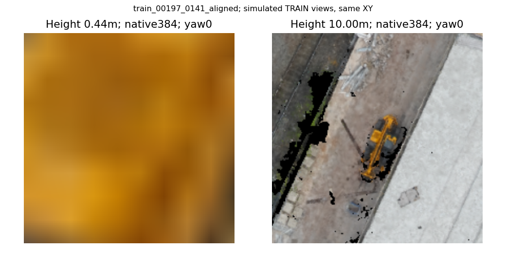
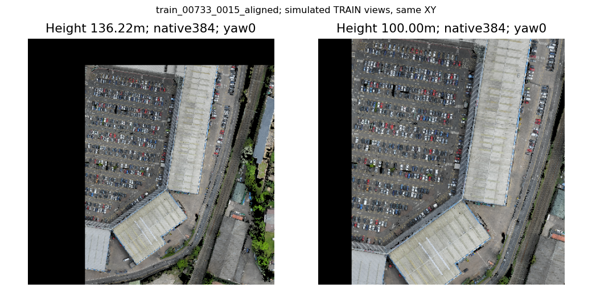
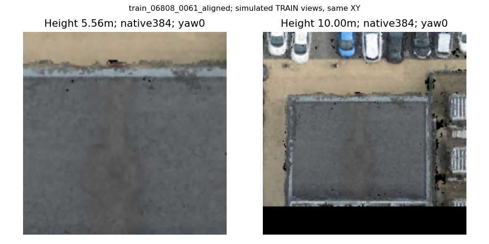
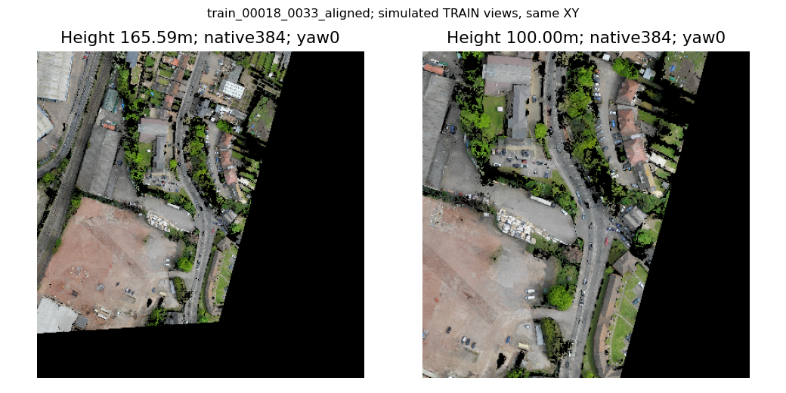
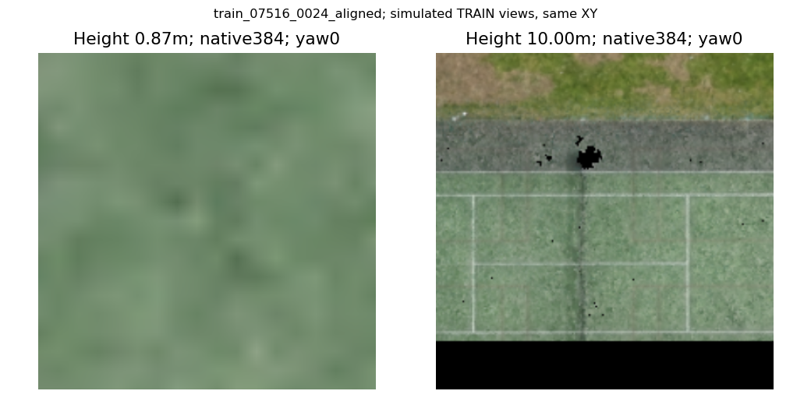
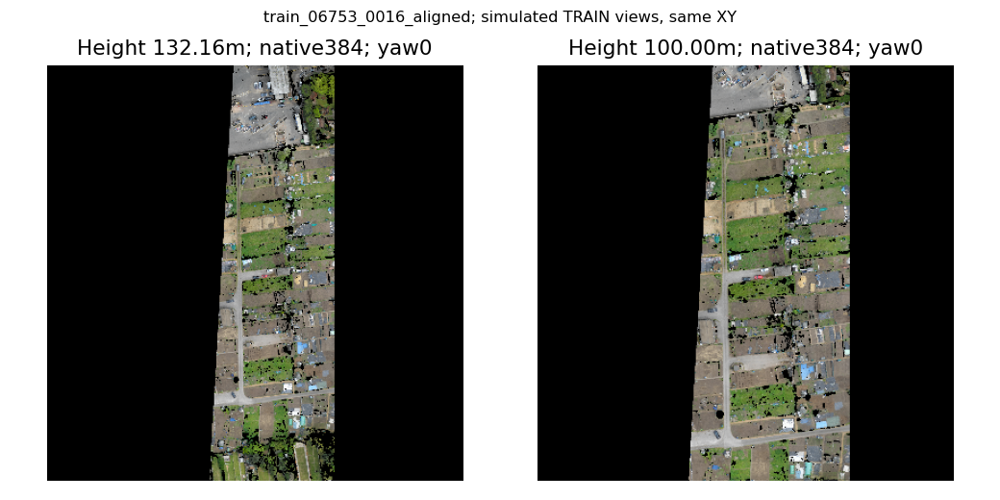

train_00197_0141_aligned
The yellow vehicle in front of the white building at the bottom right of the reddish tan parking lot to the right of the Full Circle Events & Exhibitions Ltd.

左为原参考位姿，右为动作高度范围内重采样；均从原栅格采样384，未放大冒充高清。不是实际闭环访问帧，不是三维透视验证。
The yellow vehicle in front of the white building at the bottom right of the reddish tan parking lot to the right of the Full Circle Events & Exhibitions Ltd.

The brown car that is 3rd from the right in the 14th row of cars in the large parking lot behind the One Stop Building, when viewed aerially with the long side of the One Stop Building to the right

The building that is in front of the large parking lot off Holford Drive, between the Drive anf the Footpath of Manchester-Bourenmouth. There are three large utility boxes beside it with large white grate tops.

The large building on Wellington Rd / Grosvenor Rd that has a parking lot beside it and a white box in the backyard in front of the Full Circle Events & Exhibition Ltd building.

The tennis court to the left of the massive parking lot for the West Midlands Police Custody Suite, when viewed aerially with Holford Drive to the right.

The parking lot near the Weighbridge Offices that has white painted lines and three green cars in it.
